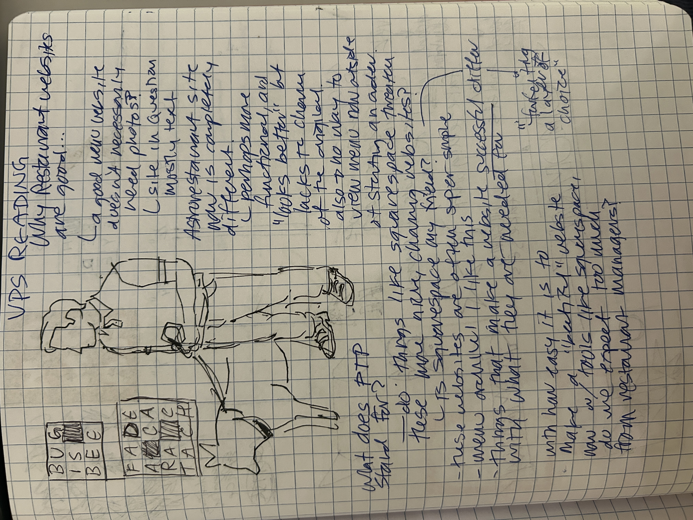

[the following is transcribed from my notebook]
- a good website doesn't necessarily need photos -> site in question is mostly text and still successful
- astronaut website is now completely different, website not even viewable unless ordering from grubhub or doordash -> perhaps more functional and "looks better" but lacks the charm of the original
- do things like squarespace threaten these more niche, charming websites? is squarespace my friend?
